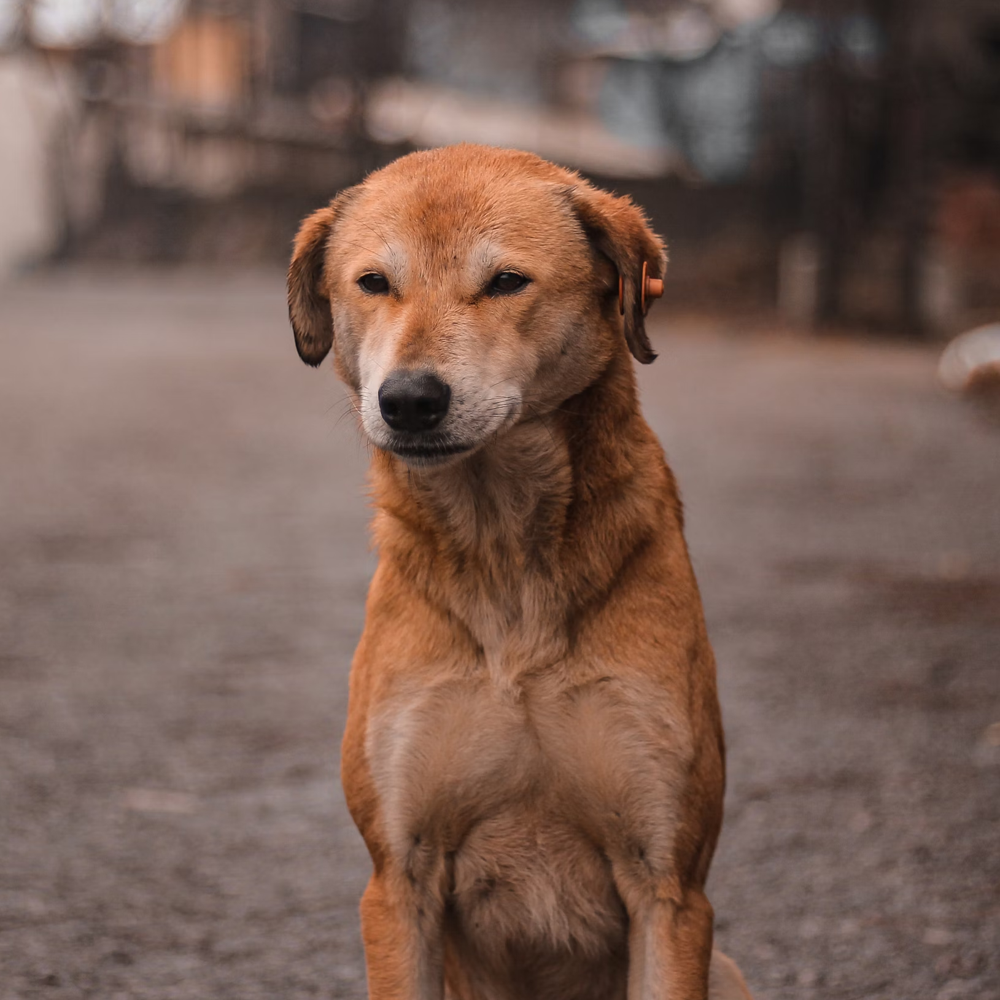

- Név: Oscar
- Nem: kan (fiú)
- Kor: 2 év
Oscar egy bájos és energikus Bichon Havanese, aki szeretetteljes és barátságos természetével könnyen belopja magát mindenki szívébe. 2 éves, hím kutyus, aki már ivartalanított, így készen áll arra, hogy új, szerető otthonra találjon. Imádja a figyelmet és a játékot, de emellett nyugodt és szelíd is, így ideális társ lehet családok számára, akár gyerekek mellé is. Ha szeretnél egy kedves, játékos kutyust, Oscar tökéletes választás!